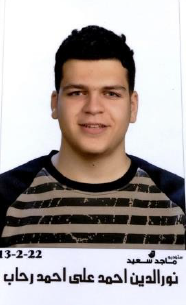

Nour Rehab

Education
- Bachelor's Degree in Computer and Software Systems Program
Ain Shams University, Faculty of Engineering, Cairo, Egypt
2022 – 2027
- Dual degree with University of East London, Computer Engineering and Software
Systems Program (2023 – 2027)
-
High School Diploma
M.S.E. Distinguish Language School, Tanta, Egypt
Projects
-
Implementing a C++ Program to Solve Logic Circuits
Developed a program using C++ to simulate and solve digital logic circuit problems.
-
Building a Java Program Designed to Make a Social Media Platform with Simple GUI
Created a Java application with a user-friendly graphical interface to simulate basic social
media platform functionalities
-
Building a MIPS Processor that Performs Jump Instructions
Designed and implemented a MIPS processor capable of executing jump instructions as
part of a hardware simulation project.
-
Building Signals and Systems Project that Generates Energy Signal in Time and Frequency
Domain
Built a project to analyze and generate energy signals in both time and frequency
domains, demonstrating knowledge of signal processing.
Courses
- The Complete 2024 Web Development Bootcamp
- Linux Introduction
- CS 50 Introduction to computer Science
Skills
- programming: Python,C++,JavaFX,HTML,CSS,JavaScript,Matlab,SQL,Selenium,TestNG
- Cooking
language
- Arabic: Native
- English: Proficient (IELTS 6.5, B2 Level)
- French: Beginner